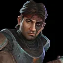
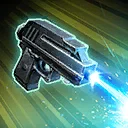
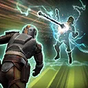
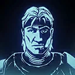

Hunter (Mercenary)
A veteran Bad Batch member who now specializes in supporting allies through marking enemies.

A veteran Bad Batch member who now specializes in supporting allies through marking enemies.

Deal Physical damage to target enemy and inflict Speed Down on them for 1 turn. During Hunter's turn, call a random Bad Batch Attacker ally to assist, and all Attacker allies gain Critical Chance Up for 1 turn. If the target enemy is Marked, all Bad Batch Attacker allies gain 5% Offense (stacking, max 50%) until the end of the encounter, and has their Defense reduced by 5% (stacking, max 50%) which can't be resisted until the end of the encounter.
If no enemies are Marked, inflict Marked on the target enemy for 2 turns, which can't be evaded or resisted. All Bad Batch allies gain Offense Up and Protection Up (50%) for 1 turn. Call all Bad Batch Attacker allies to assist dealing 30% less damage.

Deal Physical damage to target enemy equal to 100% of their Max Health, increased to 200% if they are Marked, which can't be evaded. Shock all enemies for 2 turns, which can't be evaded and inflict Protection Disruption on target enemy for 3 turns, which can't be evaded, or resisted. Bad Batch allies gain 100% Defense Penetration (stacking) until the end of the encounter.
This ability starts on cooldown.

At the start of encounter, all Bad Batch allies gain 50% Max Protection. Whenever an enemy is Marked, all Bad Batch allies recover 7% Health. Whenever a Marked enemy is damaged by a Bad Batch ally, if the ally with lowest Turn Meter is Bad Batch, they gain Speed Up for 1 turn. Whenever Marked expires on an enemy, Daze them and inflict Healing Immunity for 1 turn. At the start of the Marked enemy's turn, inflict Offense Down on them for 1 turn, which can't be evaded. Whenever a Marked enemy is defeated, Expose all enemies for 2 turns and reduce the cooldown of This Will Hurt by 5.
If Hunter has 15 or more stacks of Target Practice, he gains a bonus turn when Marked expires on enemies. Whenever Hunter gains a stack of Target Practice, reduce the cooldown of This Will Hurt by 1. While a Bad Batch ally is Captive, Bad Batch allies deal an additional instance of damage to the target enemy on their turn. While Hunter has 40 or more stacks of Soldier of Fortune, enemies are inflicted with Buff Immunity for 1 turn whenever their buffs are dispelled. When a Bad Batch ally loses Captive, reset the cooldown of This Will Hurt.
Omicron Boost : While in Territory Wars: At the start of encounter Hunter has This Will Hurt available. When Hunter gains a stack of Target Practice, reduce This Will Hurt's cooldown by 5. If there are no Galactic Legends, while a Bad Batch ally is Captive, Bad Batch allies deal an additional instance of damage to the target enemy on their turn, which can't be evaded. Whenever a Marked enemy takes a turn, reduce their Max Health by 10% (stacking) until the end of the encounter (excludes Galactic Legends).
Whenever a Marked enemy is damaged by a Mercenary ally, Hunter gains a stack of Soldier of Fortune.
Whenever Marked is dispelled or expires, Hunter loses 5 stacks of Soldier of Fortune.
At the start of their turn, each Mercenary ally gains 3% Accuracy for each stack of Soldier of Fortune they have until the start of their next turn